Your covers look good; the problem is that every article uses the same one. These six styles each belong to a group of article types, the way Calendly, Buffer, HubSpot, Mailchimp and Figma mix styles on their blogs. Your current look stays as one of the six.
Today: the latest four covers on honesttaskers.com/articles, all one composition.
Your current style, kept
A VA at work in a bright clinic, with your blue light and UI cards. You like it, so it stays, but it becomes one style of six instead of the cover for every post.
382 role posts, so split them: guides here, "what does X do" posts on App Card
Figma shoots every guest in the same studio set. One look works as a series when it is used for one kind of post, not for everything.
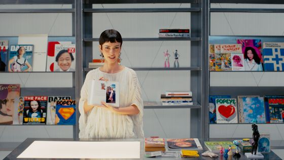
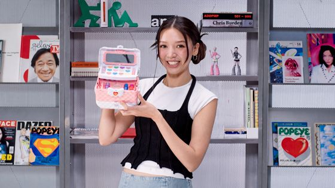
One real-looking card, no person
A pale brand field with one large, readable card (a task list, an intake queue) and small date, clock and chart tiles around it on a dotted path.
~330 posts
Calendly shows real product cards with real content; Buffer runs its "best time to post" posts as one repeatable template with orbiting tiles.
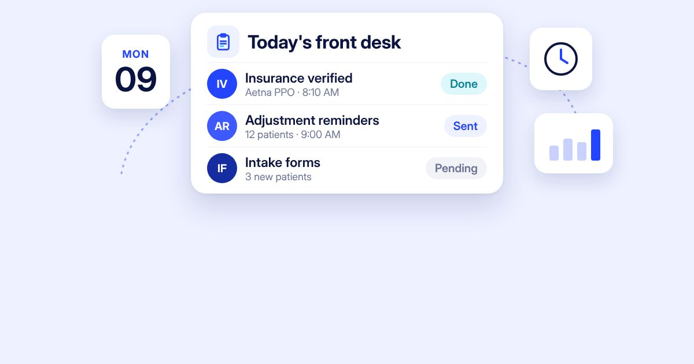
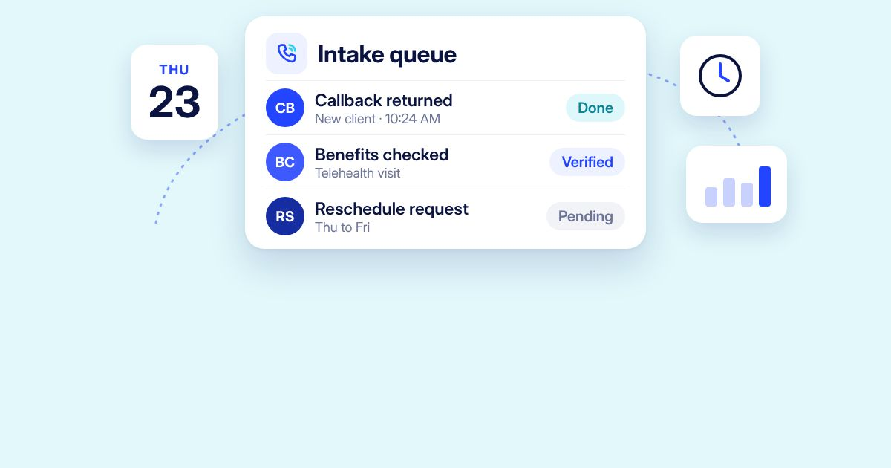
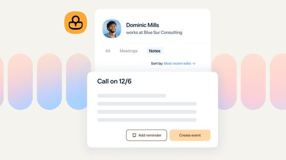
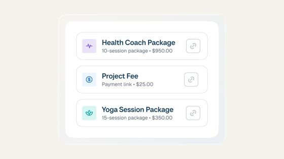
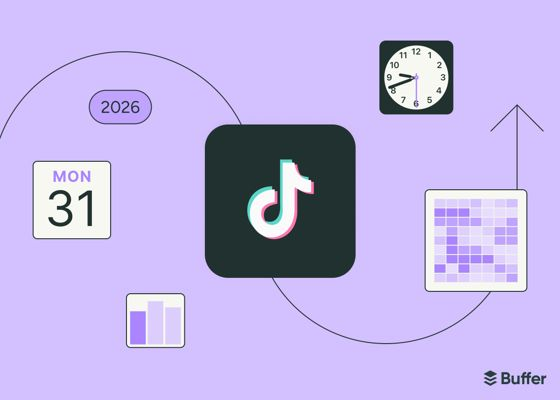
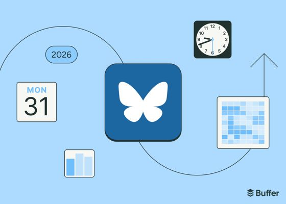
Black-and-white person in a blue arch
A black-and-white photo framed by a blue arch, with a teal circle, a deep-blue corner shape and one icon tile. Comparisons use two arches: in-house in grey, virtual in colour.
~500 posts
HubSpot cuts black-and-white people into bold colour shapes; the treatment makes very different photos read as one family.
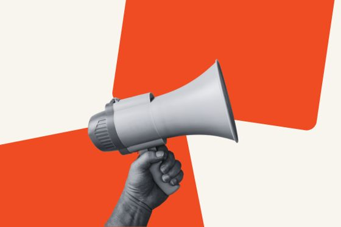
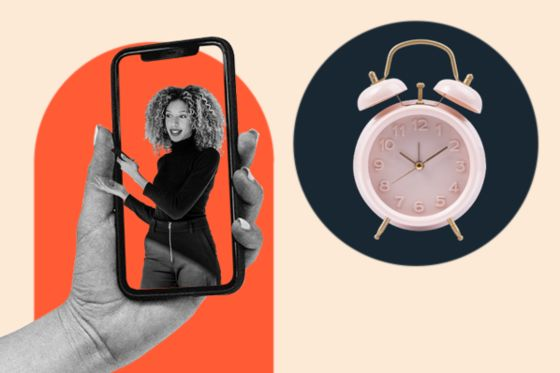
Drawn objects on one bold colour
Navy line drawings of two or three objects on one flat brand colour, each with an offset fill like a print. No people, no photos.
29+ posts
Mailchimp draws one object scene in black ink on a single bright colour. It is the calmest style and suits serious topics.
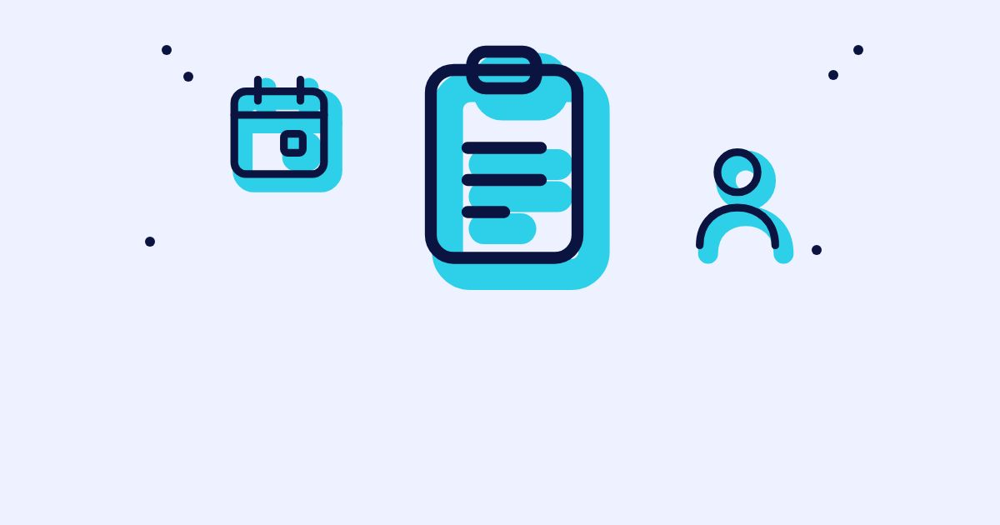
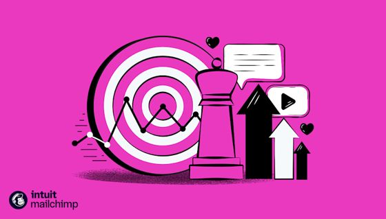
Your logo joined to the tool
Your heart mark on a blue tile, bridged to a white tile naming the software (Epic, Dentrix, DrChrono), with a date and chart tile on a dotted path.
108 posts
Calendly joins logo tiles for every integration; Buffer swaps one platform tile into the same layout for each network.
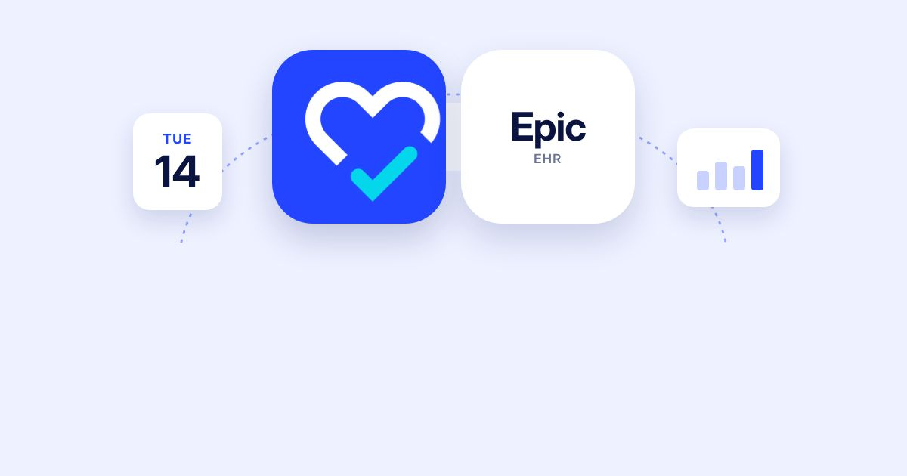
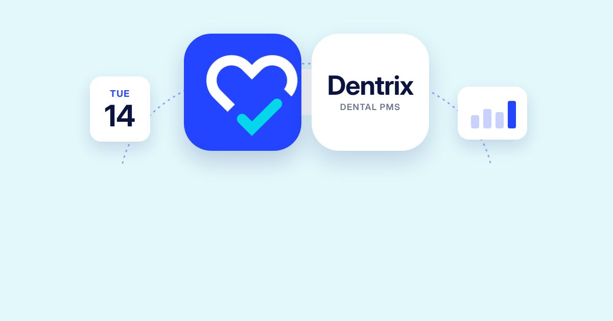
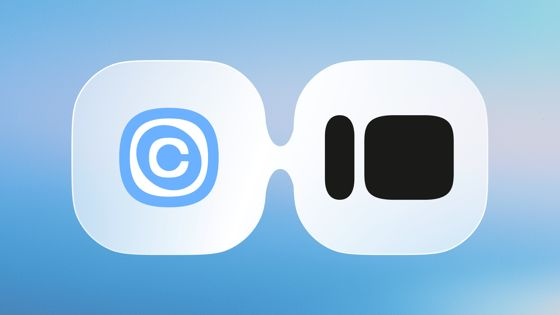
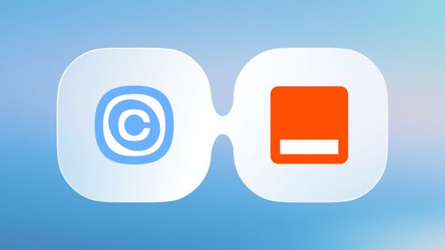
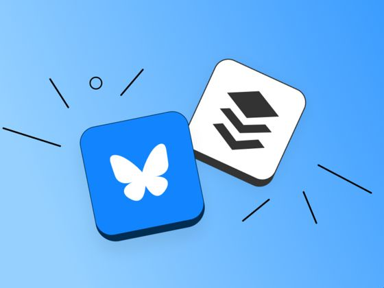
The count, large, beside a photo
The list count or one verified figure set very large on a brand field, a two-line label, and a photo on the right.
~560 posts
Stripe leads data posts with one big figure; Mailchimp gives its reports a typographic cover.
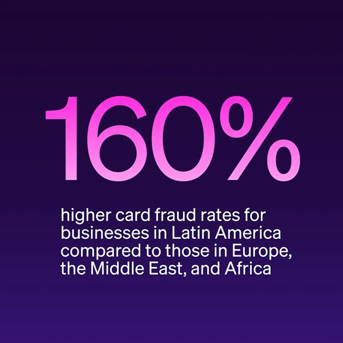
| Article type (from your 1,903 titles) | Posts | Style |
|---|---|---|
| Role guides, day in the life | ~190 | 1 Practice Scene |
| "What does X do", skills, tasks, benefits, how-to | ~330 | 2 App Card |
| Hiring, job descriptions, interview questions | 245 | 3 Arch Portrait |
| "… vs. In-House Staff" | 251 | 3 Arch Portrait (two arches) |
| HIPAA, compliance, policy | 29+ | 4 Ink on Colour |
| Software and EHR | 108 | 5 Software Bridge |
| "N Best … Companies", cost posts with a verified figure | ~560 | 6 Number Cover |
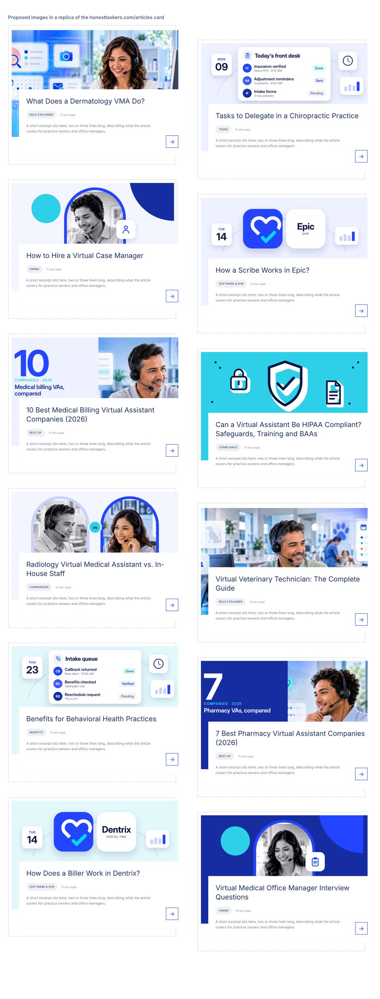
Twelve real titles in a replica of your listing card, which shows only the top 56% of each image. Every style keeps its faces, cards and numbers in that band.
The photos in styles 1, 3 and 6 are crops of your existing images, so some old floating cards still show at the edges. Fresh photos without built-in UI will look cleaner. Renders use Inter in place of Sequel Sans.